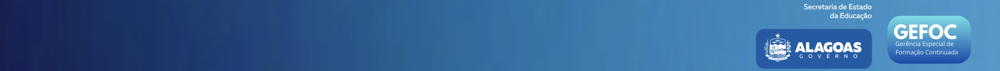

8º ano do Ensino Fundamental | Prof.ª Poliana Conceição | Maio a Dezembro de 2026
| 1 | O que é Astronomia? | Maio |
| 2 | O Céu Noturno — O que vemos à noite? | Maio |
| 3 | Dia e Noite — Por que o Sol some? | Maio |
| 4 | O Sol — A estrela mais próxima de nós | Maio |
| 5 | O Sistema Solar — Visão Geral | Junho |
| 6 | Órbitas — Como os Planetas se Movem? | Junho |
| 7 | Mercúrio e Vênus — Os Planetas do Calor | Junho |
| 8 | A Terra — Nosso Lar no Espaço | Junho |
| 9 | Marte — O Planeta Vermelho | Julho |
| 10 | Júpiter — O Maior Planeta | Julho |
| 11 | Saturno e Seus Anéis | Julho |
| 12 | Urano e Netuno — Os Planetas Gelados | Julho |
| 13 | Plutão e os Planetas Anões | Julho |
| 14 | Revisão — Quiz do Sistema Solar | Agosto |
| 15 | A Lua — Nossa Vizinha Mais Próxima | Agosto |
| 16 | As Fases da Lua | Agosto |
| 17 | Eclipses Solar e Lunar | Agosto |
| 18 | As Marés e a Influência da Lua | Setembro |
| 19 | O Sol por Dentro — Como ele funciona? | Setembro |
| 20 | O que São Estrelas? | Setembro |
| 21 | Constelações — Histórias no Céu | Setembro |
| 22 | A Via Láctea — Nossa Galáxia | Outubro |
| 23 | Outras Galáxias — O Universo é Enorme! | Outubro |
| 24 | A Corrida Espacial — EUA vs URSS | Outubro |
| 25 | Os Primeiros Humanos no Espaço | Outubro |
| 26 | A Chegada à Lua — Apollo 11 | Outubro |
| 27 | Sondas e Robôs no Espaço | Novembro |
| 28 | Estações Espaciais — Viver no Espaço | Novembro |
| 29 | Asteroides, Cometas e Meteoros | Novembro |
| 30 | Buracos Negros — Gravidade ao Extremo | Novembro |
| 31 | Telescópios — Janelas para o Universo | Dezembro |
| 32 | As Estações do Ano e a Inclinação da Terra | Dezembro |
| 33 | Calendários — Como a Astronomia Organiza o Tempo | Dezembro |
| 34 | Missões Espaciais Atuais e o Futuro da Exploração | Dezembro |
| 35 | Revisão Geral — Astronomia em Perspectiva | Dezembro |